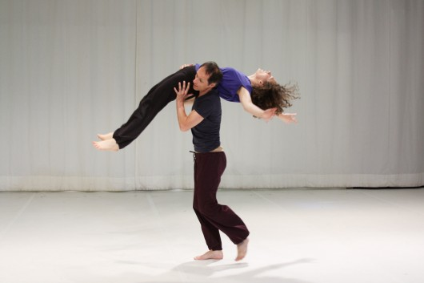

Contact Improvisation

Contact Improvisation is a journey in to numerous variations of bodily experiences in dance. Two or more partners are enabling each other to experience this vast land of options in motion through physical contact. Sometimes wild and athletic, sometimes calm and meditative, it is a type of dance open to everybody; it simply takes a playful and investigating mind and a human body. CI is an improvised dance form. It is an exploration of moving weight while dancing, an investigation of touch, bodily communication and interaction. Therefore there is no generally accepted definition of the form neither a universal syllabus. Practicing CI both partners are moving more or less with a constant point of contact (rolling point of contact). Some sort of dynamic play with balance is unfolding while they are shifting in between stability and mobility moving as one body. While swinging, turning, rolling, flying and falling the partners are establishing one center together. Following the flow of the forces, three dimensional spiral movements arise, sensory perception and reflexes are trained and the dancers gain an extended mobility. They learn to release unnecessary bodily tension and how to use the force of the muscles in an efficient way. At the beginning Contact Improvisation was an experiment created by Steve Paxton, Nancy Stark Smith, Daniel Lepkoff and others in order to explore possibilities of movement and expression for professional dancers and choreographers. Soon after it´s initiation it started to be practiced as a social dance form as well. Meanwhile there are networked international communities of dancers. Practitioners with different level of skill meet at Jams in order to explore and develop the dance form with joy and curiosity. Since its first appearance in the year of 1972, a huge amount of artistic, kinetic, emotional and communal experience and knowledge about the possibilities and restrictions of CI has been gathered. Within workshops, festivals, symposia, within different Medias like Contact Quarterly this knowledge is transmitted and exchanged. Nevertheless many of the CI dancers are eager to sustain a beginners mind in order to be able to discover new aspects, as well as to be able to renew the dance within every moment. Within recent times Contact Improvisation often is a permanent part of dance education, as well as it is more and more integrated into various movements related pedagogical and therapeutic settings. Disbanding the limits of dance, art, sports, therapy and play CI is opening up a wide range of experience. This body knowledge can be used in many different areas of life by integrating it in a beneficial and enriching way. But still the home base of Contact Improvisation stays to be contemporary dance. It´s philosophy serves the physical idea of CI- letting go of willfulness while moving, using basic survival reflexes in an efficient way, releasing unnecessary tension and using the right amount of strength in order to experience an unrestricted flow of motion.
|